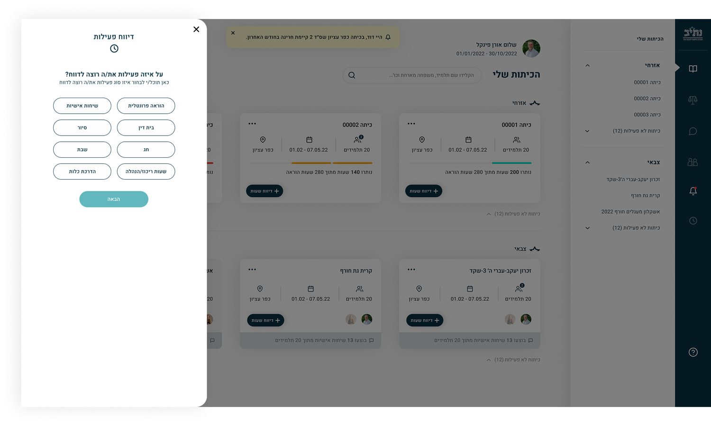
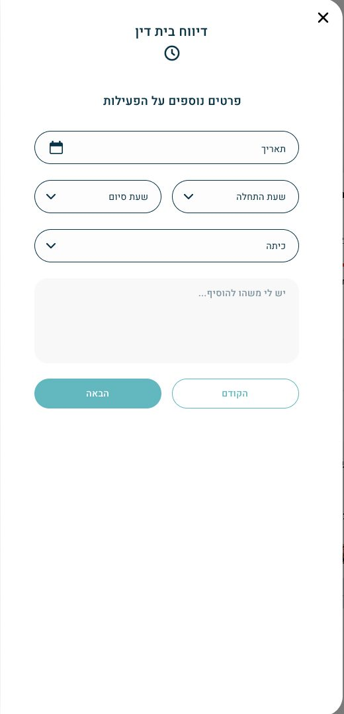
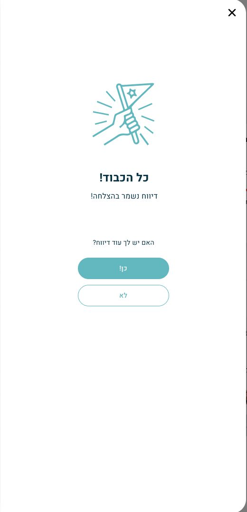
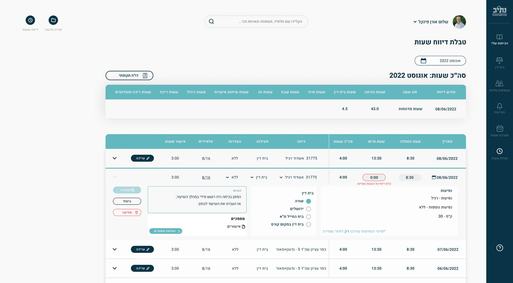
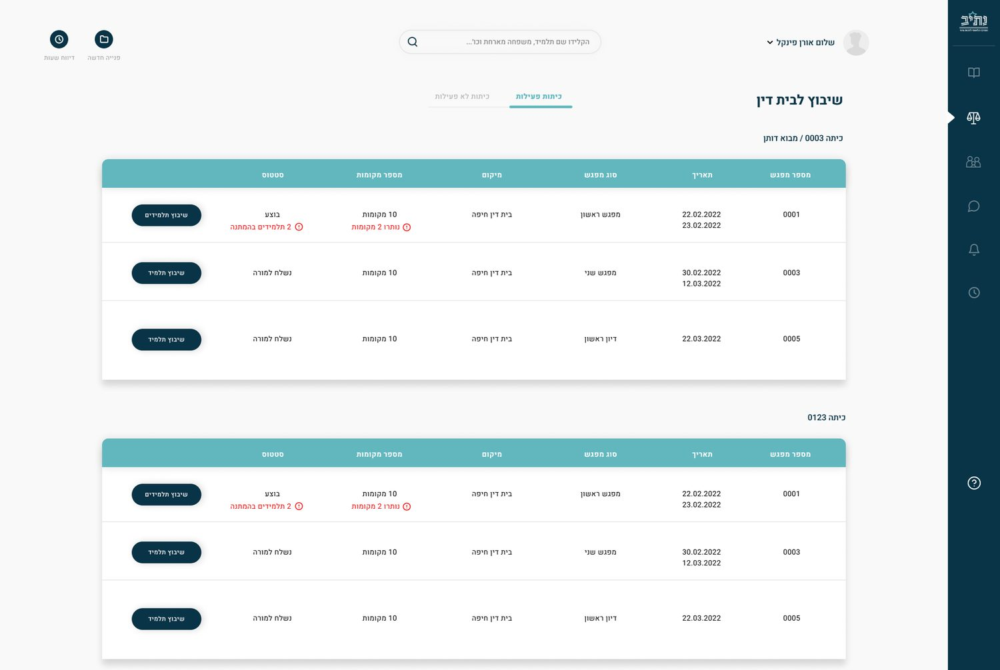
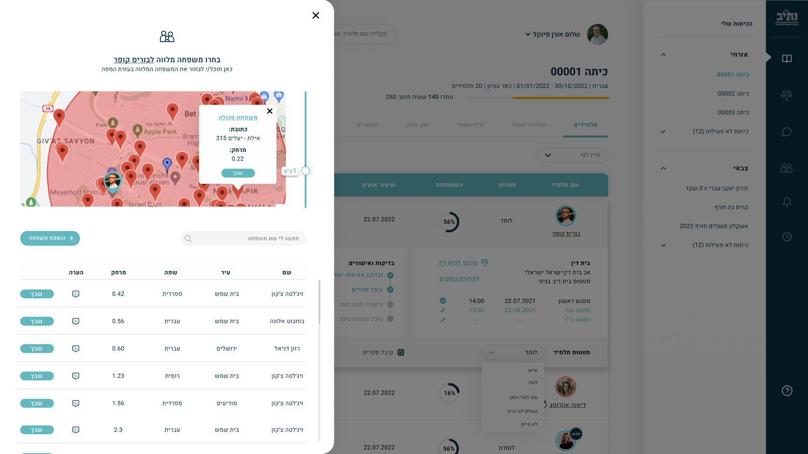
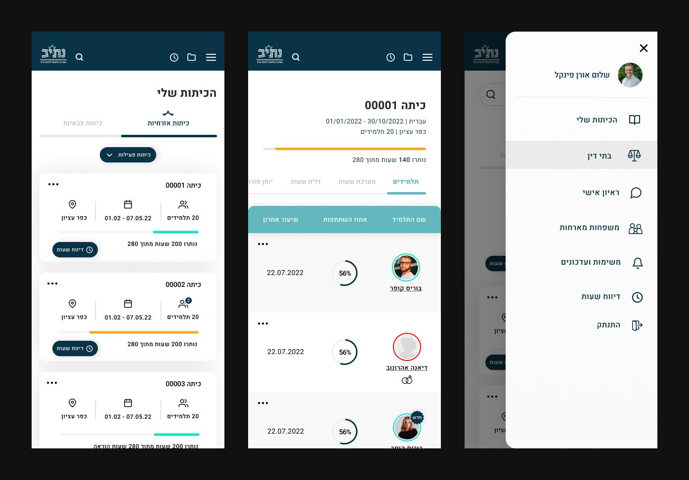

Product Design · Enterprise System · RTL
An internal system for Nativ, the National Center for Identity and Conversion, which runs study programmes on civilian and military tracks. Six processes in one product: classes and students, teacher hour reporting, interviews, rabbinical court scheduling and host-family matching. I ran the full UX and UI, in Hebrew and right-to-left throughout.
Role
UX & UI, end to end
Studio
Shnorkel (BDO Digital)
Year
2022
Platforms
Desktop & Mobile
01 · The core task
A teacher logs frontal lessons, personal talks, court days, trips, holidays and more. Asking which kind first lets every later question be the right one, instead of one form fitting none.

02 · The flow
Each type opens its own path, but the shape stays fixed: details, attendance, confirmation. A teacher reporting twice a week should never have to work out where they are.

1 · Details
2 · Who attended

3 · Saved
03 · Corrections
Editing expands the row in place and validates against what is already reported, so a correction is checked against reality before it is saved, not after.

04 · Scheduling
Every rabbinical court session shows its remaining seats and pending students in the same row as the action, so the coordinator decides from the table instead of opening each class.

05 · Matching
Host families are matched on a map with a radius, because proximity is the deciding factor and a sorted list hides it. Language and city stay alongside for the rest of the call.

06 · Mobile
Every process exists on the phone too, not a reduced version of it — teachers work between lessons and in corridors, and a system they can only finish at a desk gets finished late.
